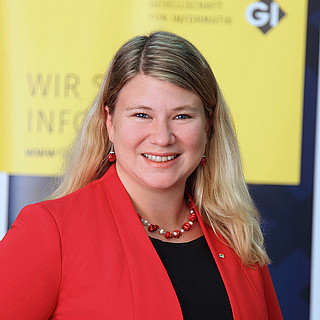

| Home | Call for Papers | Program |
The production domain is permeated by heterogeneous data sources, a variety of IT systems, and complex industrial use cases - aspects that offer a very exciting field for research. Modern production systems have a large number of sensors for monitoring industrial plants which help to gain an insight into a system’s state. Sensors over time create data sets, that may be very detailed, need to be preprocessed such as time reduced, quantitatively, and qualitatively reduced, e.g., black and white instead of colored pictures, and enriched with metadata.
The MoPro Workshop aims to be a platform for researchers and practitioners within the production domain to exchange their modeling techniques, interesting use cases and challenges.
The workshop will be held for the first time as a part of the
Modellierung'22 conference in Hamburg, Germany.
Submission Deadline:
|
Dr. István Koren, RWTH Aachen University |

Dr. Judith Michael, RWTH Aachen University |
István Koren is Deputy Coordinator of Cluster Research Domain A (Infrastructure) and Judith Michael is Deputy Coordinator of Workstream A.II (Conceptual Foundations of Digital Shadows) within the German Cluster of Excellence Internet of Production.